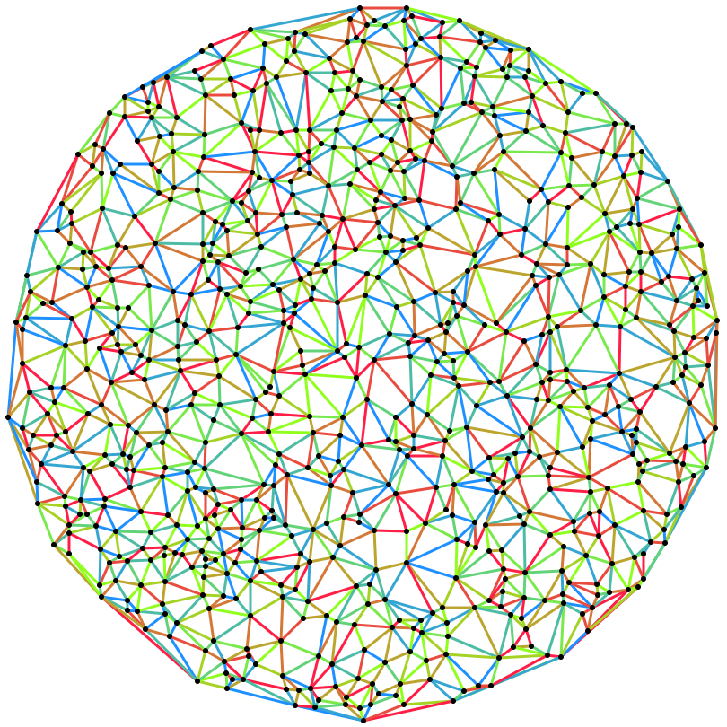

THIRD プログラミングコンテスト 2022 (AtCoder Heuristic Contest 017)¶

問題概要¶
- 交差点と道路を表す無向平面グラフが与えられる
- すべての道路について、D日の工事期間のうちどこか1日で工事を実施したい
- 1日あたりK本の道路まで工事できる
- 工事をしていない道路は通行可能
- 「k日目の不満度」を異なる2頂点間の最短距離の増加分の期待値とし、「工事全体の不満度」は日の不満度の平均とする
- 工事全体の不満度が最小になるように各道路の工事日を決めよ
時間¶
- 200 時間
個人的メモ¶
- スコア(不満度)の計算がとても重いので、それをどうするか、が難しい問題
- 貪欲に初期解を作って、スコア計算を近似して辺の日を入れ替える山登り、が強く、上位では多かった模様
問題固有の性質¶
- スコア計算がとても重い
- 平面グラフ、重みはユークリッド距離(Euclidean distance)
- 隣接する辺(最短パス上?)が同じ日に工事されるのがよい可能性がある
アプローチ¶
- 今回は、スコア計算がそのままではめちゃくちゃ重いため、それを近似・別の評価関数、または、そもそも別の問題を解くなど対処する必要があった
- ざっくり、「スコア計算を近似＋貪欲初期解＋山登り/焼きなまし」だった人が多い模様
スコア計算の近似¶
- ある辺の日を入れ替えた場合、その入れ替え前後の日しか不満度は変化しないため、不満度の差はその2日分だけ再計算すれば求められる
- 厳密スコア計算
- 2日分について、辺を追加/削除した場合のグラフで、N頂点についてAll-Pair Shortest Path(APSP)を求める
- 厳密に計算できるが、計算がかなり重い
- 開始頂点を間引く
- 何点か代表点(4〜11点ぐらいや、周上 or できるだけ離れた数十点とかが多そう?)を選んで、そこから他の頂点への最短距離・不満度を求めて、それをスコアの近似値として使う
- 近くの頂点は、だいたい似たような感じになりやすいため、離れた頂点を選んだほうがよさそう
- また、代表点数を増やすと近似精度が高まる(はず)
- 何点か代表点(4〜11点ぐらいや、周上 or できるだけ離れた数十点とかが多そう?)を選んで、そこから他の頂点への最短距離・不満度を求めて、それをスコアの近似値として使う
- 変更する辺の周辺の頂点を選ぶ
- 変更する辺の周辺が大きく影響を受けると考えて、その周辺の頂点(部分誘導グラフ)だけ考えて計算し、近似値とする
- (自分もこれでやったけど、結構頂点数や選び方で計算コストや近似精度が変わる印象)
- 各頂点のいくつかのパス(最短路?)に注目
- 変更する辺から離れた2点間最短距離の差分を見る
- 変更する辺の両端頂点から他の頂点への最短距離を見る
- その他
- 近似解は、頂点数などを増やすことで近似精度が高められる場合、最初のうちは荒く評価、最後の方は正確めに評価、など
- 加えて、評価値として、各日での工事数が等しくなるようにするのを追加する、など
最短経路再計算の高速化¶
- 制限時間内に山を登り切るのが難しいため、さらに高速化する必要がある
- 代表点を決めて計算する方法の場合、辺を追加/削除しても大体の辺には影響がないので、変更の影響を受けるところだけ計算することで高速化できる
- 最短経路木で部分木のみ計算
- 変更があった辺の部分グラフ付近だけを再計算
- 最短経路差分を辺の重みにしてBFS
- 最短経路のところは0、そうでないところはその増加分のようなグラフを作る
- (ポテンシャル?01BFSっぽく?SPFAではない?要確認)
- 最短経路のところは0、そうでないところはその増加分のようなグラフを作る
- ランダムな2点間の最短距離はA*を使うのも有効?
初期解(貪欲解)¶
- (今回はイテレーション数が少ないのもあるので、よい状態/初期解からスタートするのも重要そう)
- 各日について全頂点が連結になるようにする
- スコアは無視して、適当に日を変えて連結になるようにする
- 各辺について、スコアやなんらかの評価値が最大になる日を貪欲に割り当てる
- 辺の選び方は、(貪欲に決めていく場合?は)ランダムに選ぶよりも、なんらか順番に選んだ方が良かった模様
- 中心や端からBFSなど連続的に選ぶ
- なんらかの評価順
- より多くの最短経路で通過する辺
- 最後の更新辺の近く
- など
近傍¶
- 辺の工事日を変える
- ランダムに変える
- 隣接する辺の工事日を選ぶ
- 工事辺が少ない日
- コストが一番小さくなる日
- 2辺で工事日をswap
- 頂点を選んでそこにつながる辺について、貪欲に工事日を決め直し
- 工事する辺をパスとみなして伸ばす/縮める、工事日を変える
- 近くの2辺を同時に変更
2辺の相性を最適化¶
- 2辺について、工事日を同じにする/しないなどの相性を前計算しておき、割り当てを最適化
- または、それを初期解として、残り時間で山登り、など
- https://twitter.com/ymatsux_ac/status/1622202941120843779
- https://twitter.com/_phocom/status/1622190043954827264
- https://atcoder.jp/contests/ahc017/editorial/5689
- https://atcoder.jp/contests/ahc017/editorial/5704
- https://twitter.com/Shun___PI/status/1622190122266685440
- https://twitter.com/Yu_212_MC/status/1622196746557464576
- https://twitter.com/EmptyBox_0/status/1622191964937654273
その他のアプローチ¶
- パスの集合被覆問題
- 各日のAPSPを求めておいて、定期的に更新
- 最適輸送
その他¶
最適解に近づくと、工事している道路がパス(最短路上の辺?)っぽくなる現象¶
- 直感的には工事する辺はバラバラになっていたほうがよさそうに感じられる
- しかし、ある程度改善した解では、工事日がパス(直線)っぽくまとまりになっている場合が多い
- これは、ある工事している辺eについて見たとき、その辺の両頂点からそれぞれ少し離れた頂点間では、辺eをギリギリで迂回するというよりは、大きくなめらかに迂回するような最短経路になりやすいため、辺eの隣接辺についてもまとめて工事したほうがよい可能性がある(解説放送)
- あと、直線的な感じだと、それに直角方向に通る最短経路は邪魔しないのも良い
- 他、最短路a→b→cについて、そのa→bをとb→cを別の日に工事すると2日分使えないが、同じ日に工事すると1日は使えることになるので、まとめて工事したほうが良い可能性がある
- https://twitter.com/not_522/status/1622199063583277056
- https://twitter.com/gmeriaog/status/1622193079926288385/photo/1
工事道路が0個になった日があったら0個のままにしたほうがよい?¶
ユークリッド距離(三角不等式が成り立つ)ならBFSでよい?¶
- https://twitter.com/fuppy_kyopro/status/1622196302271619073
- https://twitter.com/stat_learning/status/1622221060308598785
- (SPFAとは微妙に違う?頂点に複数回訪れて最短距離更新されるのを許す感じ)
- もし問題があったとしても、今回のように近似でもよいなら、速度を取れて嬉しい
SPFA¶
- https://en.wikipedia.org/wiki/Shortest_Path_Faster_Algorithm
- https://twitter.com/not_522/status/1622189869832474626
- https://twitter.com/not_522/status/1622194364729679876
- 平面グラフだと速いかも(?要確認)
Dial's Algorithm¶
- https://qiita.com/convexineq/items/aca8dde73cc866aa362a
- https://noshi91.github.io/algorithm-encyclopedia/dijkstra
- 長さごとにqueueを用意して、長さが小さい順に見ていくことで、最小を取り出す操作をpriority_queueなしに実現できる
- 今回だと、1000で割るとかして精度を犠牲にして、wの最大値を1000までとかに抑えると適用できる
Floyd-WarshallのSIMD高速化¶
- https://twitter.com/toomerhs/status/1622232189047033856
- https://twitter.com/toomerhs/status/1622615443986071554
ダイクストラ時の状態の型¶
- https://twitter.com/_phocom/status/1622200877535879168
- pairじゃなくてuintにまとめられる
双対グラフ¶
- https://twitter.com/contramundum2/status/1622226206266634241
- https://ja.wikipedia.org/wiki/%E5%8F%8C%E5%AF%BE%E3%82%B0%E3%83%A9%E3%83%95
- https://kopricky.github.io/code/Graph/dual_graph.html
- 頂点が平面グラフの面に対応するグラフ
Visualizerの使い方¶
- 頂点クリックで、その頂点から他の頂点について、工事で増えた分の増量が見れた
- この機能に気づいていない人も結構いたっぽい(自分も気づかなかった...)
- visualizerの解説を読もう
- 赤シートを活用
論文¶
- 頂点のサンプリング
- 最短路更新
小ネタ¶
- https://twitter.com/tomerun/status/1622273459203211264
- 途中(結構長い期間)までPsyhoさんが暫定で相対満点を出していた
解説¶
(100位まで&発言を見つけられた方のみ)
- bowwowforeachさん
- Psyhoさん
- USAさん
- yokozuna57さん
- cuthbertさん
- gasinさん
- ymatsuxさん
- phocomさん
- https://twitter.com/_phocom/status/1622194177449807873
- https://twitter.com/_phocom/status/1622195313669967873
- https://twitter.com/_phocom/status/1622218997067579392
- https://twitter.com/_phocom/status/1622208426393874432
- https://twitter.com/_phocom/status/1622206346715365376
- https://twitter.com/_phocom/status/1622204580133240834
- https://twitter.com/_phocom/status/1622203938610225153
- https://twitter.com/_phocom/status/1622200877535879168
- bin101さん
- eijirouさん
- flowlightさん
- msmitsさん
- kensさん
- highjumpさん
- iwashi31さん
- yowaさん
- GoldIngotさん
- yunixさん
- xyz600さん
- Shun_PIさん
- tomerunさん
- wanuiさん
- takytankさん
- Kahukaさん
- Yu_212さん
- simanさん
- notさん
- kawateaさん
- ozy4dmさん
- EmKさん
- carrot46さん
- pokaさん
- fuppy0716さん
- terry_u16さん
- https://twitter.com/terry_u16/status/1622190072660643840
- https://twitter.com/terry_u16/status/1622190715647447042
- https://twitter.com/terry_u16/status/1622191235476910080
- https://twitter.com/terry_u16/status/1622192481956941824
- https://twitter.com/terry_u16/status/1622193219470774272
- https://twitter.com/terry_u16/status/1622193773538332672
- https://twitter.com/terry_u16/status/1622194257749770241
- https://twitter.com/terry_u16/status/1622195058404638721
- https://twitter.com/terry_u16/status/1622197671879647235
- https://twitter.com/terry_u16/status/1622202855217328130
- https://twitter.com/terry_u16/status/1622203326380281858
- https://twitter.com/terry_u16/status/1622224297455677440
- https://twitter.com/terry_u16/status/1622221093619789825
- https://twitter.com/terry_u16/status/1622226091552411648
- https://twitter.com/terry_u16/status/1622255418037923840
- petit_sophiaさん
- kusanoさん
- birdwatcherさん
- sakikuroeさん
- matsupさん
- Jirotechさん
- koikotyaさん
- emakさん
- y_kawanoさん
- colunさん
- ssaattooさん
- plcherrimさん
- shim0さん
- Denteさん
- C7BMkOO7Qbmcwck7さん
- YamagenSakamさん